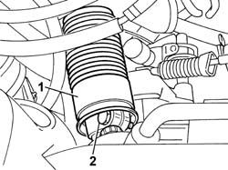
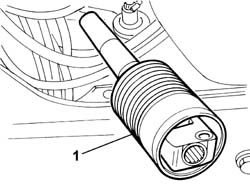
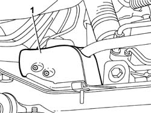

7095E14 FRONT SUSPENSION SOUND INSULATION SHIELD (ONE) LEFT OR RIGHT - R.R.
- Path
- Procedures > 70 FITTINGS > 7095 MISCELLANEOUS BODYWORK > 7095E VARIOUS BODY INSULATION ELEMENTS > 7095E14 FRONT SUSPENSION SOUND INSULATION SHIELD (ONE) LEFT OR RIGHT - R.R.
- Kind
- repair procedure (removal / refitting; the operation number is the code)
- Applies to
- all engines; all production periods
- Interactive page
- https://sloeber94.github.io/elrnDB-fDct/en/#/244001557
Applies to: all engines; all production periods
 Removing
Removing
 Refitting
Refitting- Position the vehicle on the lift.
Op. 7055B54 UNDER-ENGINE GUARD - R R
- Undo the bolt fixing the side sound insulation shield on the left front suspension crossmember.
- Using tool no. 1878077000, remove the button for the front suspension crossmember sound insulation shield.
Description | Code | Function | |
|---|---|---|---|
- | Knife | 1.878.077.000 | Remove fastening studs |
1. Lift up the rubber outer casing covering the lower section of the steering column.
2. Undo the bolt fixing the steering column.

Applies to: all engines; all production periods
1. Remove the steering column universal joint.

Applies to: all engines; all production periods
1. Remove the side sound insulation shield on the left front suspension crossmember.

Applies to: all engines; all production periods
Refitting
Removing- Position the side sound insulation shield on the left front suspension crossmember.
- Position the power assisted steering box steering column.
- Tighten the bolts fixing the power assisted steering box steering column.
Value - daNm | Fastening | Component | Ø | |
|---|---|---|---|---|
- | 2.3 - 3.3, daNm | Special bolt securing steering column | M8 |
- Position the rubber outer casing covering the lower section of the steering column.
- Fix the button for the side sound insulation shield on the left front suspension.
- Tighten the bolt for the side sound insulation shield on the left front suspension.
Op. 7055B54 UNDER-ENGINE GUARD - R R
- Remove the vehicle from the lift.